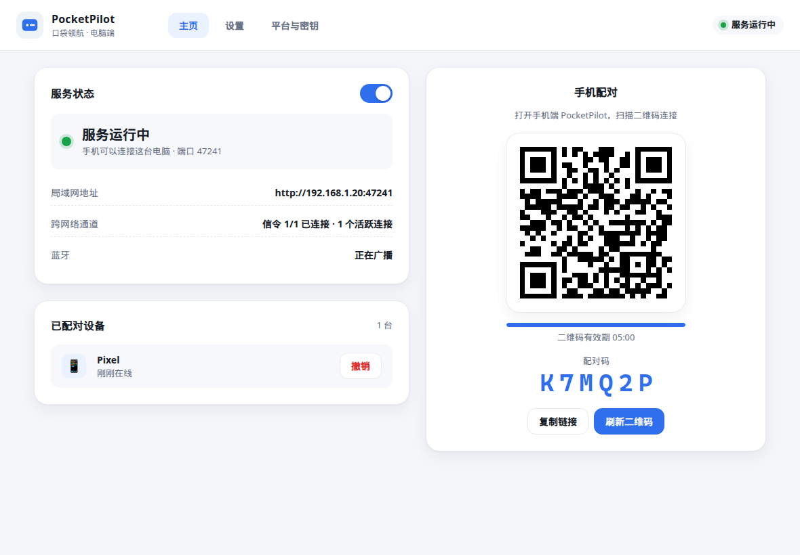
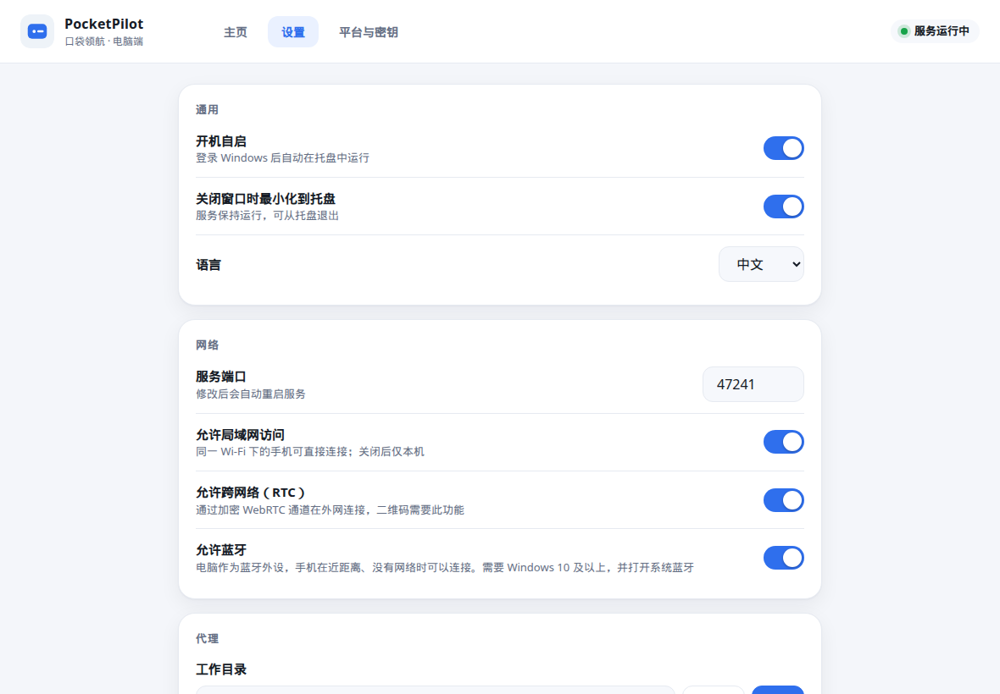
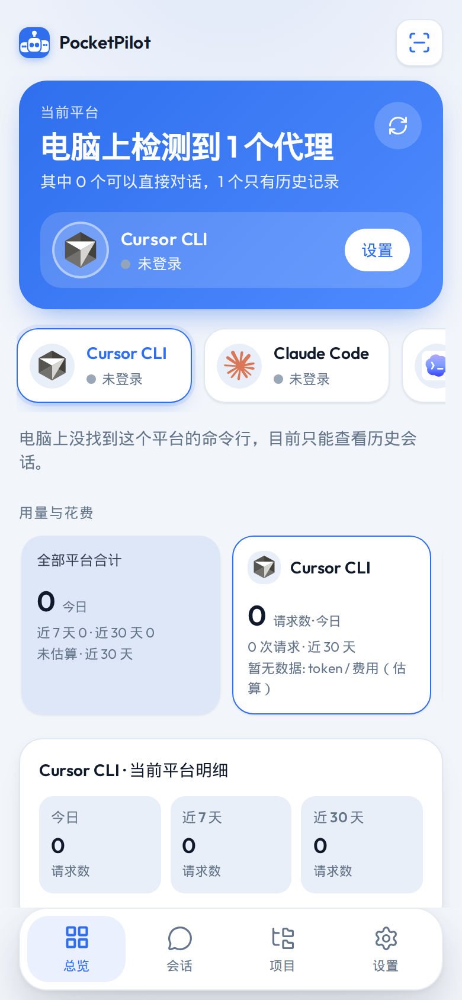
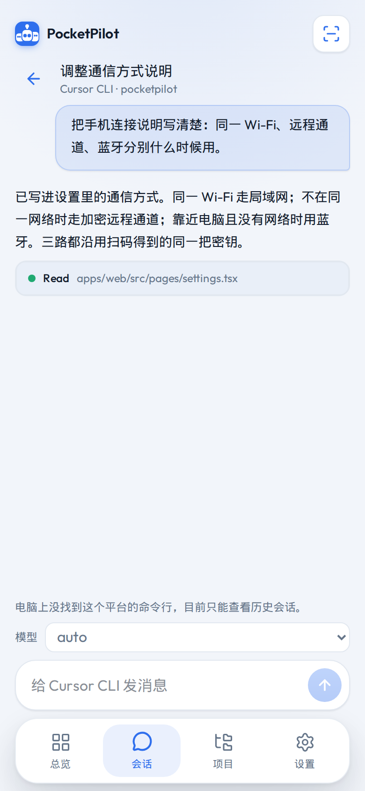

AGENTS
六条代理线路
Cursor、Claude Code、Codex、OpenCode、Gemini、DeepSeek Harness。演示模式不需要先装 CLI。
手机负责挑选和下指令。Cursor CLI、Claude Code、Codex、OpenCode、Gemini CLI 和 DeepSeek Harness 都跑在你的电脑上，输出再流回手机。
同一套界面，换代理只换电脑上的命令。连接方式可以自动选，也可以在设置里逐项打开。
Cursor、Claude Code、Codex、OpenCode、Gemini、DeepSeek Harness。演示模式不需要先装 CLI。
同一 Wi-Fi 走局域网 HTTP，其次加密 WebRTC，近距离没有网络时走蓝牙。密钥来自同一次扫码配对。
二维码里的密钥在 URL fragment，不进服务器日志。配对后按设备发令牌，可以单独撤销。
电脑上的标准输出流回会话，不用等整段回答结束。历史、项目和用量留在这台电脑上。
窗口里启动服务、显示配对码和二维码。关闭窗口进托盘。蓝牙用系统自带的 WinRT，不用换驱动。
蓝灰界面，中英切换。手机端锁住缩放，输入框保持 16px，避免聚焦时页面被放大。
电脑跑宿主，手机只装界面。对外连接始终要先配对。
Windows 上双击 PocketPilot。窗口里能看到服务、局域网地址和配对二维码。
安装 Android APK 后扫描二维码。同一 Wi-Fi 也可以填地址加 6 位配对码。
选 Cursor CLI、Claude Code 或其他线路，再选电脑上的项目目录。
宿主在那个目录里启动对应命令，文字回到手机。断线后按 Wi-Fi、远程、蓝牙的顺序再连。
左边上下是电脑主页和设置，右边并排是手机主页和会话。




在 Windows 上执行 npm run desktop:dist:win，得到安装包和便携版。双击打开，不需要命令行日常操作。
npm run android:debug 产出调试 APK。界面打进安装包，相机用来扫配对码。
需要 Node.js 22+。npm run dev 同时启动界面和宿主，方便改界面。
# Node.js 22+ npm install npm run dev # UI http://127.0.0.1:47231 host http://127.0.0.1:47232